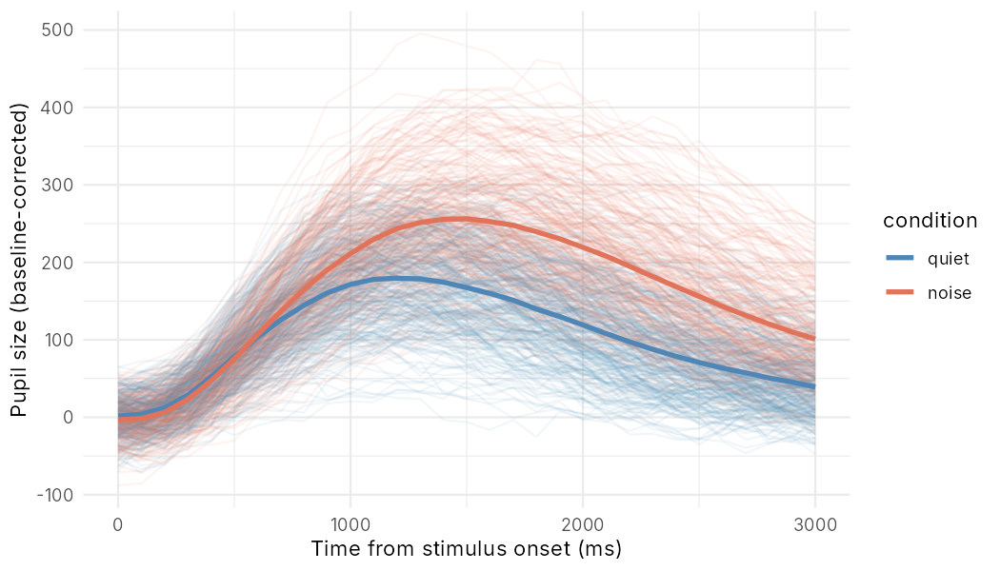

Simulated linguistic data for teaching statistics in R.
Every data set in simling is simulated, and the code that generated it is in data-raw/. Because the true effects are known, you can fit a model and check whether it recovers them. Each help page (?vowel_duration) lists the variables and the true model.
Installation
simling is on GitHub only for now. Install it with:
# install.packages("remotes")
remotes::install_github("mcanzi/simling")Usage
Each data set loads with the package. Here is the pupil data, with single trials and the mean in each condition:
library(simling)
library(ggplot2)
pupil_noise
?pupil_noise
ggplot(pupil_noise, aes(time, pupil, colour = condition)) +
geom_line(aes(group = trial_id), alpha = 0.08) +
stat_summary(fun = mean, geom = "line", linewidth = 1.2) +
scale_colour_manual(values = c(quiet = "#4f86b5", noise = "#e0735a")) +
labs(x = "Time from stimulus onset (ms)", y = "Pupil size (baseline-corrected)") +
theme_minimal()
In the true model on the help page, the pupil peaks 90 units higher and 250 ms later in noise than in quiet. In the plotted means the difference is about 77 units and 300 ms. The help page suggests a GAMM with autocorrelated residuals for estimating these differences.
To find a data set for a lesson, simling_datasets() lists all of them with their branch, language, size, response and topic:
library(dplyr)
simling_datasets() |> filter(branch == "Psycholinguistics")
simling_datasets() |> filter(grepl("counts", response))Every categorical column is a factor. Its first level is the reference level: the baseline condition, such as "voiceless" in vowel_duration or "grammatical" in agreement_attraction. IDs such as participants, speakers and words are factors too. Binary outcomes coded 0/1 and rating scales are numeric. The one exception is messy_export, which keeps the text columns of a raw export so that students can clean it.
Data sets
| Branch | Data set | Language | Rows | Response | Topic |
|---|---|---|---|---|---|
| Phonetics | formants |
– | 120 | continuous | Normalisation, z-scores |
vowel_voicing |
English | 120 | continuous | Two groups, t-tests | |
speech_styles |
– | 150 | continuous | Categorical predictors with three levels | |
style_voicing |
– | 160 | continuous | Categorical × categorical interaction | |
vowel_duration |
– | 384 | continuous | Mixed models, random slopes | |
korean_stops |
Korean | 1,440 | continuous | Cluster analysis, sound change | |
price_f2 |
English (L1 and L2) | 2,200 | trajectories | GAMs and GAMMs | |
mandarin_tones |
Mandarin | 4,224 | trajectories | Contour shape, speaker normalisation | |
| Phonology | hungarian_harmony |
Hungarian | 4,200 | binary | Mixed logistic regression, wug tests |
| Prosody | tobi_agreement |
German | 456 | labels from two coders | Inter-rater agreement, kappa |
rhythm_metrics |
8 languages | 400 | continuous | Classification, rhythm classes | |
| Psycholinguistics | rt_frequency |
– | 200 | RT, binary | Data wrangling |
word_rt |
– | 400 | RT | Multiple regression, collinearity | |
freq_length |
– | 400 | RT | Continuous × continuous interaction | |
l2_frequency |
– | 400 | RT | Continuous × categorical interaction | |
lexical_decision |
– | 800 | RT | Mixed models, crossed random effects | |
lexical_decision_l2 |
German (L1 and L2) | 1,200 | RT | Mixed models with interactions, figures | |
naming_pilot |
German | 1,200 | naming latency | Power analysis by simulation | |
lexical_accuracy |
Italian | 1,800 | binary | Mixed logistic regression | |
zipf_rt |
– | 2,000 | RT | Skewed predictors, log transformations | |
disfluencies |
Italian | 2,400 | counts, many zeros | Zero-inflated count models | |
megastudy |
– | 6,000 | RT, proportion | Large item-level data, non-linear effects | |
pupil_noise |
– | 17,856 | trajectories | GAMMs, autocorrelation | |
n400 |
German | 21,600 | ERP amplitude | EEG, topography, continuous predictors | |
visual_world |
English | 23,040 | samples per object | Eye tracking, time-course analysis | |
| Syntax | agreement_attraction |
English | 1,280 | eye-tracking measures, binary | Reading measures, missing data |
acceptability |
English | 1,536 | 7-point ratings | Ordinal regression | |
german_relatives |
German | 13,824 | reading times | Self-paced reading, region-by-region analysis | |
| Morphology | german_plurals |
German | 2,880 | five categories | Multinomial regression, wug tests |
| Semantics and pragmatics | scalar_implicature |
English | 1,440 | binary, RT | Bimodal individual differences |
| Conversation | turn_taking |
10 languages | 3,000 | gap duration | Skewed distributions, cross-linguistic comparison |
| Corpus linguistics | passives |
English | 400 | counts | Poisson and negative binomial regression, offsets |
relativizers |
English | 2,400 | three categories | Multinomial regression | |
| Sociolinguistics | address_forms |
German | 180 | categorical | Contingency tables, chi-squared |
language_attitudes |
– | 320 | 5-point ratings | Factor analysis, reverse-coding | |
cantonese_tone_merger |
Cantonese | 1,800 | continuous | Sound change in apparent time, mixtures | |
td_deletion |
English | 2,000 | binary | Trees and random forests | |
| Dialectology | dialect_survey |
Italian | 580 | counts out of 10 | Maps, spatial patterns |
| Bilingualism | code_switching |
Portuguese–German | 360 | counts | Negative binomial regression, offsets |
| Second language | perception_training |
– | 18 | correct out of 40 | Paired designs, wide data |
accent |
English (L1 and L2) | 1,200 | categorical | Random forests, cross-validation | |
| Language acquisition | overregularization |
English | 144 | errors out of attempts | Binomial regression, null effects |
vocabulary_growth |
English | 572 | counts out of 680 | Growth curves, longitudinal data | |
first_words |
European Portuguese | 2,400 | age at first word, censored | Survival analysis | |
| Sign language | dgs_iconicity |
German Sign Language | 18,000 | 7-point ratings | Crossed random effects, group differences |
| Forensic speech science | forensic_comparison |
German | 3,240 | similarity scores | Likelihood ratios, Cllr, calibration |
| Historical linguistics | do_support |
English | 1,200 | counts out of trials | Logistic change, Constant Rate Effect |
| Typology | word_order |
400 invented languages | 400 | categorical, counts | Non-independence of languages |
| Meta-analysis | bouba_kiki_meta |
21 languages | 40 | effect sizes | Random-effects meta-analysis, publication bias |
| Data cleaning | messy_export |
– | 1,086 | raw text | Cleaning a real-looking export |
“–” marks data sets without a particular language.
Rebuilding the data
Run source("data-raw/make_all.R") from the package root, in a UTF-8 locale (the default on macOS and most Linux systems). Each script sets its own seed, so the data are identical every time.